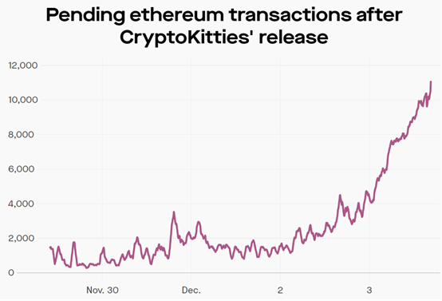
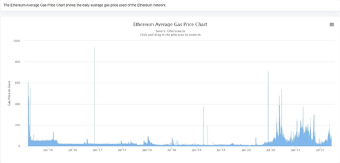

Home
Home1.Introduction
Decentralized Finance (Defi) is a blockchain-based financial model that uses smart contracts to conduct financial transactions. Decentralized finance has transformed the entire financial ecosystem, and is expected to completely transform the traditional financial sector. Currently, there are many opposing views on decentralized finance. Some call Defi a revolution, others a business opportunity, but many call it a scam.
Defi is still booming. Defi Pulse estimates the current Defi agreement is worth close to $11.5 billion. A year ago, the Defi agreement was worth around $1 billion. This market appears to have grown significantly. Definitively less valuable than traditional financial markets, the Defi market has grown tremendously. Defi has exploded in popularity in just one year.
For inquiry, we will briefly introduce Defi in the next article, focusing on Defi's two major issues: technical issues and financial market issues. Then we will analyze the causes of these problems, and finally, we will combine historical data and professional paper analysis to give some constructive solutions to the above problems.
2.Defi market and basic concept
DeFi refers to Decentralized Finance, which can also be called Open Finance. In contrast to traditional highly centralized financial systems, DeFi is built on the public chain of blockchain. Through block chain technology, such as mobile money based on block chain technology development software, by intelligent contract code to remove such third-party agencies and intermediary middleman, avoid the complex of the intermediate links and lead to saving time and money wasted, and the ability to directly connect both parties conducting financial transactions (Chen & Bellavitis, 2020).
In the existing financial system, financial services are largely controlled and regulated by a central system, whether it is the most basic of withdrawals and transfers, loans or derivatives transactions. DeFi is open finance leveraging blockchain infrastructure. DeFi wants to build a peer-to-peer financial system that is transparent, accessible and inclusive through distributed open source protocols. Using blockchain technology and smart contracts, people can verify every transaction made on them, minimizing trust risks and making it easier and more convenient for participants to access financing.
3.Critical analysis of Cefi and Defi
3.1Comparison by using SWOT analysis
| SWOT | Cefi | Defi |
| Strength | It has a long history, strong stability, and is widely accepted. | Behavior is privatized, and verification is used instead of trust to avoid human error. |
| Weakness | Managed, restrained.Human error (negligence and malfeasance) and mismanagement. | Technical flaws and regulatory loopholes. |
| Opportunity | Financial product innovation.The currency value is closely related to national strength | It is easier to deal with financial shocks caused by accidents (2008 financial crisis vs. financial shocks caused by COVID-19). |
| Treat | Transaction risk caused by exchange rate fluctuations. | High risk under full coverage trading. |
3.2Cefi system
Finance begins with "transaction," which comes from early human communication. Trading dates back to Mesopotamia. Centralized finance is a trust-based trading system. Until today, the world's financial system has been supervised and controlled by various national central banks. The emergence of centralized finance follows the evolution of the human economy and society. It has a long history, stability, and acceptance. This is the most important and difficult to replace advantage.
At the same time, the system's flaws are apparent. Centralization implies management and constraint. Every transaction and record goes through a third party (usually our government). Human error (negligence and misfeasance) and mismanagement are unavoidable problems due to this intervention. These issues often cause major financial crises. Also, if the central bank or government database is hacked, all traders' data will be leaked.
Centralized finance is still ripe for new financial product development, and new investment methods have emerged in recent years. Likewise, when a country's strength changes rapidly, its currency changes dramatically. In extreme cases, when a country is affected by war, its citizens' currency is worthless. This is true in many African countries, including Zimbabwe. In these conditions, traditional finance investment behavior is risky.
3.3Defi system
Decentralized finance lacks a strong financial intermediary. Because market participants' behavior is heavily privatized, traders can rely on technical support instead of verification. Defi's power comes from the blockchain's underlying structure and smart contracts working together. The Defi ecosystem is decentralized, so anyone can interact with the public blockchain. A network of nodes establishes trust. This eliminates most human errors. Accidental financial shocks are easier to manage with Defi: Compared to the 2008 global financial crisis and the COVID-19 financial shock, economist Nariman Behravesh stated in the article "The COVID-19 economic shock is the 2008 financial crisis. 3x as much ". Defi requires almost no F2F communication. The benefits of Defi are clear in this situation.
Defi's flaws are technical and regulatory. Compared to Cefi, blockchain technology has been around for a short time. Due to blockchain limitations, Defi cannot be truly commercialized. Defi also uses smart contracts for financial transactions, allowing hackers and security personnel to detect issues. The Defi ecosystem has a crazy gameplay in terms of supervision and liquidity mining. Lightning loans allow users to obtain loan capacity out of thin air in a transaction, and the loan amount can be astonishingly high. (https://www.lianyi.cc/u/admin) We must admit that people are usually blind and fanatic in the early stages of development. Absent supervision, investors face risky designs, high risks, and overlapping regulatory agencies.
Defi products can be traded 24/7 on the network by anyone in the network-covered area. This trait is both an asset and a liability. Full time and space coverage increases transaction efficiency but also volatility risk.
4.Remain problems on Defi market
4.1Finance problems of Defi
There may be a huge economic bubble because it is currently impossible to determine the real value of virtual currency. Today, all Defi applications and operations rely on virtual currency. Defi's operation will be hampered if the price of virtual currency fluctuates violently.
Loans, assets, payments, derivatives, and decentralized exchanges are now part of the Defi market（Schär, 2021). Virtual currency is inseparable from any user action. Taking loans as an example, if people use their virtual currency assets to over mortgage through Defi and obtain a certain number of loan assets, the loan assets shrink dramatically when the virtual currency market drops. Even if the system sets the minimum clearing price, the borrower will lose a lot. At the same time, a loan's purpose is unclear. Because virtual currency is speculative and hyped, and there are no clear trading rules, the risk is high, and the market is unstable（Swartz, 2018).
A few months ago, the virtual currency market was in turmoil. Bitcoin fell below $40000 on May 19, 2021, a 30% drop from its early-May peak of $59543 ("Bitcoin falls below $40,000 for first time since February", 2021). On the same day, the price of Doge plummeted by 20%. Ethereum prices have also fallen since May 12's record high (Scribner, 2021). The virtual money market's violent shocks individual companies and institutions. To buy Bitcoin with company funds, Tesla announced in February 2021. This good news drove up Bitcoin （Taskinsoy,2021). On May 12, Tesla announced it would stop accepting Bitcoin payments, sending Bitcoin prices plummeting. Bitcoin's price has fallen by over 40% since its peak on April 14(Jin & Singh, 2021). These figures show that the virtual money market is extremely volatile, and that many customers are still wary of it.
Defi's main project is lending. Defi eliminates the need for an intermediary, lowering loan costs and saving time. It is theoretically re-borrowable. However, it will lead to the issue of Defi's interest pricing mechanism not being determined or transparent. Because borrowing generally generates interest. Opportunity cost plus risk compensation equals interest. This is a risk-free interest rate. However, risk compensation is the borrower's qualification and credit result. Traditionally, banks and other financial intermediaries do this. Because Defi lacks a credit system, it cannot normally assess risk compensation and therefore cannot provide accurate interest pricing.
4.2Problems provided by Ethereum platform
The first problem faced by DeFi on the Ethereum platform is the network congestion caused by the scalability issues of Ethereum (Antonopoulos, 2018). When the number of transactions initiated in a single block is too large, a large number of unconfirmed transactions will occur in the block, resulting in network congestion. This problem should be blamed for the limited capacity of each block. It happens when transaction fees are too low so miners will not give priority in packing such blocks. Other factors resulting in high volume of transactions include active trading due to increased investor expectations for NFT, the emergence of DeFi when people create contracts for projects on the platform, and the emergence of USDT as an increase in arbitrage trading in the market (PETERSEN, 2020).
According to Etherscan, a blockchain browser, transaction volumes on the Defi market platform have exploded since Ethereum opened. The normal queue of several thousand transactions at the beginning has now become a crowded channel with more than one million transactions on average. In addition, the overall trend did not show a significant decline and remained at a relatively high level (Appendix 1).
One obvious example is an app called CryptoKitties, launched in December 2017. According to Etherscan data, CryptoKitties directly caused the number of outstanding transactions on Ethereum to rise from 2,000 to 12,000, a roughly six-fold increase (Ian Wong, 2017). It doesn't make sense that a software release could directly cripple Ethereum’s trading system(Appendix 2).
The second problem with Ethereum is the failure of investment projects due to long transaction times. In March 2020, Binance's CEO claimed that congestion on the ETH network kept the average transaction confirmation time around 44 minutes (Bitcoinist, 2020). In August of the same year, 559 transactions were delayed, and it took another 110 minutes for all of them to be processed ("How Coinbase handled ETH network congestion on August 1, 2020", 2020). A slower trading network for participants means that many derivatives trades and collateral cannot be executed because they have little time to think about it before their collateral is cleared. DeFi projects like Maker require fast action, and this may not be possible for all traders due to network congestion.
Secondly, Ethereum’s transaction fees are too high and hard to bear. The immediate consequence of network congestion is not only slower circulation of ETH and Ethereum cryptocurrencies, but also a direct increase in transaction fees (miners' fees). This is because when the network is congested, miners in the block will preferentially package the transactions with higher commission fees to get higher profits, while the remaining transactions may remain pending because they have not been packaged and block confirmed by miners (Choi, 2018). As a result, in order to complete the transaction as soon as possible, participants need to constantly increase transaction costs to improve their transaction priority (Bashir, 2017).
Throughout 2019 and early 2020, the gas price remained roughly at 10-20 Gwei. But since the latter half of 2020, gas prices have been rising, according to EtherScan data. Especially in the last two months, gas prices have remained high above 150 Gwei (Appendix 3).
The DeFi application in Ethereum also presents complications. In Ethereum’s system, each user needs to independently create a wallet, sign a private key, transfer a transaction and so on. This requires users to understand blockchain, encryption technology, smart contracts and other relevant knowledge. They also need to deal with potential risks that may arise in a timely manner (Murphy, 2021). Therefore, in order for DeFi in Ethereum to achieve universality, lowering the product entry barrier is a problem that must be overcome.
The Ethereum platform has many problems, but DeFi has not been migrated to other platforms for further development. The main reason is that most DeFi products are built on Top of Ethereum, and MakerDAO and other apps that dominate DeFi are built on Top of Ethereum (Saurel, 2020). And the combination of on-chain assets and off-chain assets in the Ethereum system form the DeFi ecological barrier. For other public chains, project assets are scarce, making it even less likely that large DeFi projects will emerge. And after DeFi investment is scaled up, the cost of migrating from Ethereum to other public chains cannot be borne by participants.
4.3Harker problems on blockchain and wallet
This section will discuss the most well-known attack in DeFi's history, examine the blockchain flaws used by hackers, and provide vulnerability solutions or preventative actions. On August 11, 2018, hackers exploited a weakness in Poly Network's smart contract to steal $253 million in tokens, $265 million in Ether, and $85 million in USDC from the Binance Smart Chain, the greatest hack in Poly Network and DeFi history. A total of $600 million worth of property was stolen (“ValueWalk: Hackers Steal $600M From The Poly Network,” 2021). The primary cause for this attack is that there is an issue with the logic used to maintain contract permissions. Any user can conduct a transaction by calling the verifyHeaderAndExecuteTx function, and when making internal call calls, the user can manipulate the function name, and a malicious user can call some of the procedures via properly generated data exceptions. Additionally, the EthCrossChainManager contract has the ability to modify the Keeper, often via the change Bookkeeper method, but in this attack, the attacker successfully modifies the Keeper via the verifyHeaderAndExecuteTx function call via the carefully prepared data. The Keeper address, which could sign the transaction, resulted in the most destructive attack since the foundation of Defi (“The initial analysis of the PolyNetwork Hack,” 2021).
4.4The usefulness and weakness of Smart Contract
Smart contracts are the application product of blockchain technology which brought changes to reality. Almost all types of financial transactions can be transformed into use on the blockchain, making smart contracts an irreplaceable position in Defi technology. (Wang,S. , 2018)If bitcoin is regarded as the beginning of the blockchain 1.0 era, then smart contracts are the representative product of blockchain 2.0.
The advantages of smart contracts are obvious. As a decentralized and automated program, smart contracts can increase transparency and reduce operating costs. According to different implementation conditions, it can also improve execution efficiency and reduce commercial operating expenses. Also, smart contracts are highly customizable and can be designed in many ways to provide different services and solutions. Therefore, there is an opinion that smart contracts can eventually replace the existing transaction mode and create a perfect credit society with the continuous evolution of blockchain technology.
Although smart contracts have proved its necessity in blockchain technology, there are still some remaining problems which may bring hidden risks to application. Giancaspro, M. (2017) mentioned the problem of smart contracts and compatibility with contract law. One of his opinions is that the identity of the person behind the Internet is unknown. Given that the parties to the smart contract do not know each other, the party reaching adulthood may inadvertently sign a contract with a minor who is anonymously obscured by the Internet, which is a real risk. Whether a smart contract should or can be regulated by law to maintain its reliability is controversial. Since the participation of third-party monitoring agencies is contradictory to the idea of decentralization.
Another similar problem lies in the verification mechanism of smart contracts. Although the verification information in a smart contract is set in advance, transparent and cannot be changed. The problem lies in the difficulty of confirming the authenticity of the verification information. Due to the limitation of distance and time, the verification of many conditions is not traceable, which leads to the possibility of forging conditions. Since smart contracts are designed to conduct automatically when some conditions are fulfilled. Once the contracts are activated and cannot be changed, it will inevitably cause losses. (Zou, W., 2019)
5.Potential solutions to the remain problems
5.1Extension of stable coin
Facing the chaotic situation of the Defi market, one possible solution is to use the stable coin as the only circulating currency when using the Defi service. The emergence of stable coins is because the volatility of virtual currency is too large. It generally maintains a certain ratio with a certain currency, to maintain the relative stability of currency value and reduce the huge risk caused by excessive fluctuation of digital currency. For example, as an earlier stable coin, USDT is actually linked to the US dollar. At present, the stable currencies on the market include USDT, TUSD, GUSD, Bitusd, Libra, etc. （Lyons & Viswanath，2020).However, at present, the stable coins in the market are issued by companies and institutions, which is not enough to achieve absolute stability. Once the issuer issues more stable coins, it will also lead to the chaos of the whole market. In this regard, a plan is to use the stable coins issued by central banks as a unified standard. Other institutions can only serve as trading platforms and no longer enjoy the power to issue currency.
At the same time, these trading institutions also play a very important role in the scheme. Trading institutions can replace banks and other financial intermediary companies in the traditional financial system. Institutions can use the retained user data to conduct secret credit analysis and asset review. Big data analysis can generate different credit ratings for each user through the number and number of transactions users have on the platform. The trading platform allows users to buy and sell virtual currency assets. It requires users to associate their personal bank accounts to exchange stable coins with other values. After users get digital currency, they can trade virtual assets in the market. When users get credit rating and virtual currency assets, they can use a series of financial services such as Defi. Users can obtain virtual currency more quickly, safely, and conveniently, so as to rapidly expand the number of users of Defi. It should be clear that the central bank's stable currency held by the trading platform is issued through central banks of various countries. The circulation quantity of stable currency is transparent, and users can query on the platform. At the same time, the trading platform can play a role of implicit supervision for Defi.
5.2scaling of layer 1&2
Problems with DeFi running on Ethereum are inevitable, so Ethereum is currently being upgraded from 1.0 to 2.0. Thus, there are two scaling solutions one on layer 1 and layer 2.
At layer 1, researchers proposed the concept of shading. This concept is implemented on top of Ethereum’s underlying protocol. In it, a blockchain is divided into many different "slices", and each "slice" contains a amount of data and can process transactions independently. In order to improve the network throughput of blocks, the existing POW consensus protocol will be replaced by a more efficient POS consensus algorithm (Staff, 2021). This scheme enhances the base layer of the blockchain protocol itself, thus increasing the scalability of Ethereum.
Layer 2 scaling is not about adding Ethereum’s own capabilities, it's about building on top of them. Rollup technology enables to bundle sidechain or off-chain transactions into a single transaction then submit to layer 1. Layer 2 can reduce transaction operations on the main chain and extend some other operations out of the chain. This allows for off-chain interactions and can still be returned to the main chain when those interactions are needed (Staff, 2021).
5.3Hacking problem solving
It's well-known that blockchain technology prevents tampering with smart contracts. Hackers now use blockchain reentrancy attacks to find smart contract flaws. A blockchain attack's goal is to continuously add data and trigger smart contracts. This will cause the programmed logic to call the recursive function, which will cause no issues because only part of this function has been called, indicating that the transaction was successful and that the block has been attacked (Chinen et al., 2020). Even if Ethereum is compromised, it will only be attacked 51% of the time. Having been hacked, the hijacked node can only attack its own block. If a hacker updates data in the block, a new protocol for the block is created. Because the new blockchain protocol is incompatible with the old, hacked blocks are useless. The attacked block's new protocol clashes with the other's ("VeriBlock Foundation Announces MESS Vulnerability in Ethereum Classic Blockchain," 2021). A smart contract flaw could be a programming error. Hacker calls code that withdraws money or displays balance. Recursive calls to the same function are harmless, but they expose the code. In other words, the hacker can create a new block on top of the entire chain, since this attack method can access the entire blockchain and thus its data.
When we looked into the security of blockchain, we realized that smart contract flaws are tough to exploit. This is because smart contracts are used to encrypt the cryptocurrency. Hacking a block to steal data and money is tough without a supercomputer. To attack a blockchain or a contract, hackers must use a variety of professional analysis and scanning tools. And now blockchain encrypted with binary hashing. If we use a trinary encryption algorithm instead of a binary encryption scheme, we must evaluate its security. The hash algorithm is the most widely used and secure encryption technology (Kishore & Kapoor, 2014). Also, the hash algorithm has many branches, and it is important considering which should be trinary. We feel that replacing binary encryption techniques with trinary algorithms is impractical due to time and financial expenses, as well as concerns about security and effectiveness. As a result, we believe that using Ethereum for digital signature and authentication would be more viable (Kishore & Kapoor, 2014).
6.Discussion
6.1The promotion of Ethereum platform
After the Ethereum platform was successfully upgraded to 2.0, changing the consensus mechanism extended the life of its new consensus mechanism, while shading expansion solved the problem that its processing capacity could not meet the requirements of commercial use, and greatly reduced transaction costs. However, the new mechanism also brings new problems. Firstly, a change in the consensus mechanism would certainly cause existing miners and manufacturers to suffer. They may choose to quit or transfer to other public chains, so ETH officials need to consider how to retain participants in the ecosystem. Secondly, the shading model shows that in layer 1, much shadings will be added to the beacon chain and two-way interaction between the chains will be realized. Although it is easy to synchronize A slice to B slice, it is quite difficult to continue operations on A slice based on the synchronized B slice. So I think the upgrade time for layer 1 will be significantly extended.
6.2Hacker culture and social impact
In 2020, there were 122 blockchain hacks, stealing almost $3.78 billion in cryptocurrency. Each programme lost over a million dollars in 2020 (“Blockchain Hackers Stole $3.8 Billion in 122 Attacks in 2020,” 2021). People's perceptions on the hacking incident vary. Others perceive hacking as a representation of their rebellious and confrontational mentality, while others see it as a violation of ethics and policy. Hacker culture has both positive and harmful influences. Positive impacts include the belief that hacker culture fosters liberty and equality, an attitude of perpetual exploration and learning, optimism, and an anti-traditionalist and anti-authoritarian mindset. Negative influences include an excessive devotion to technological superiority, which results in a moral crisis, or the growth of an excessively liberal and anti-authoritarian mindset (Rayner, 2018).
6.3Public policy on Defi market
The impact of Defi and crypto assets has long been discussed by various people in different fields. Mark Carney, the Bank of England Governor, believed authorities should choose their own ways to treat cryptoassets. Policies like isolation, regulation or integration are all acceptable. However, all those policies should be used to stop crimes and stabilize the system, but not for limitation. Currently, our world has adopted an integration approach, people must obey the commodities laws, pay tax, and resist money laundering. Whenever an innovation or new technologies is put into use, public interest will be the first thing to be considered. (Casey,M., 2018) Although the Defi framework could bring many advantages and serve as a complete subversion of our existing finance framework, due to technological imperfections and legal loopholes, this technology still needs more time to become well-rounded.
Most of the work for Defi products reformulation should be laid on stability. One of the possible solutions for our original financial system to combine with Defi may lie in super large open permissioned blockchain. America, China and the European Union may build three chains and take other small countries as participants. Like the private chain, the permissioned chain system generally has identity authentication and permission settings, and the number of nodes is often determined, which is suitable for transaction processing between big enterprises or institutions. This can not only solve the problem of supervision but also let distributed ledger technology play its rule. Let a country with a mature financial system and a leading technology dominate an open permissioned blockchain will better ensure regulatory fairness and the stability of the chain.
7.Conclusion
At the end of the article, the concept of decentralized finance still deserves to be emphasized: it is a kind of finance of opportunity block chain. It does not rely on all centers to exchange financial tools. Instead, it uses smart contracts (Ethereum) on the blockchain to carry out financial activities. After analyzing decentralized and traditional finance, we focus our research on critical research and problem solving of decentralized finance.
We discussed the legal issues arising from integrating smart contracts and contract law and proposed possible loopholes in the authentication system. Ethereum, as a running platform of Defi, has advantages in terms of the number of users and challenges Defi in terms of scalability, long transaction times, expensive transaction fees, and complex obstacles. In addition, we also analyzed DEFI technology and finance problems in the article. For DEFI technology, the most worrying issue is hacking. We have envisaged some methods to improve the security of Defi transactions, but these assumptions still need to be verified by experiments.
To sum up, we have to admit that decentralized finance is a new and controversial financial system so far. However, it is expected to completely replace traditional centralized finance and become the mainstream of the world's financial system.
8.Reference
Appendix 1 (Source by Etherscan)
Appendix 2 (Source by Etherscan)
Appendix 3 (Source by Etherscan)
9.Appendix
1.Antonopoulos, A. M., & D., G. W. P. (2018). Mastering ethereum : Building smart contracts and dapps. ProQuest Ebook Central https://ebookcentral.proquest.com
2.Bashir, I. (2017). Mastering blockchain. ProQuest Ebook Central https://ebookcentral.proquest.com
3.Blockchain Hackers Stole $3.8 Billion in 122 Attacks in 2020. (2021). AIT News Desk. https://aithority.com/technology/blockchain/blockchain-hackers-stole-3-8-billion-in-122-attacks-in-2020/
4.Bitcoinist. (2020). Retrieved 22 September 2021, from https://bitcoinist.com/ethereum-transactions-take-44-minutes-to-clear-amid-market-chaos/.
5.Bitcoin falls below $40,000 for first time since February. Nypost.com. (2021). Retrieved 6 September 2021, from https://nypost.com/2021/05/19/bitcoin-falls-below-40000-for-first-time-since-february/.
6.Chen, Y., & Bellavitis, C. (2020). Blockchain disruption and decentralized finance: The rise of decentralized business models. Journal Of Business Venturing Insights, 13, e00151. https://doi.org/10.1016/j.jbvi.2019.e00151
7.Chinen, Y,. Yanai, N., Cruz, J. P., & Okamura,S. (2020). Hunting for Re-Entrancy Attacks in Ethereum Smart Contracts via Static Analysis. Cornell University Library, arXiv.org. https://www.proquest.com/docview/2419781815/A21132BAB9E644EAPQ/1?accountid=14681
8.Choi, K. (2018). How To “Cancel” Ethereum Pending Transactions?. Medium. Retrieved 22 September 2021, from https://medium.com/etherscan-blog/transaction-taking-too-long-26549a8e7ccb.
9.Casey, M., Crane, J., Gensler, G., Johnson, S., & Narula, N. (2018). The impact of blockchain technology on finance: A catalyst for change Etherscan. (2021). Retrieved 22 September 2021, from https://etherscan.io/chart/gasprice.
10.Etherscan. (2021). Retrieved 22 September 2021, from https://etherscan.io/chart/tx.
11.Giancaspro, M. (2017). Is a ‘smart contract’ really a smart idea? Insights from a legal perspective. Computer law & security review, 33(6), 825-835.
12.How Coinbase handled ETH network congestion on August 1, 2020. The Coinbase Blog. (2020). Retrieved 22 September 2021, from https://blog.coinbase.com/how-coinbase-handled-eth-network-congestion-on-august-1-2020-f4841b6510fb.
13.Ian Wong, J. (2017). CryptoKitties is jamming up the ethereum network. Quartz. Retrieved 22 September 2021, from https://qz.com/1145833/cryptokitties-is-causing-ethereum-network-congestion/
14.Jin, H., & Singh, K. (2021). Tesla’s Musk halts use of bitcoin for car purchases. Reuters. Retrieved 6 September 2021, from https://www.reuters.com/technology/tesla-stops-taking-bitcoin-cites-fossil-fuel-use-mining-cybercurrency-2021-05-12/.
15.Kishore, N., & Kapoor, B. (2014). An efficient parallel algorithm for hash computation in security and forensics applications. Piscataway: The Institute of Electrical and Electronics Engineers, Inc. (IEEE) Conference Proceedings. https://www.proquest.com/docview/1564560120/DEB98222F1744A6EPQ/1?accountid=14681
16.Lyons, R. K., & Viswanath-Natraj, G. (2020). What keeps stablecoins stable? (No. w27136). National Bureau of Economic Research.
17.Murphy, J. (2021). The Biggest Problems Challenging DeFi, and How To Solve Them. Entrepreneur. Retrieved 22 September 2021, from https://www.entrepreneur.com/article/368299.
18.PETERSEN, C. (2020). Ethereum network congestion rockets as ETH supply moves into smart contracts. CryptoSlate. Retrieved 22 September 2021, from https://cryptoslate.com/ethereum-network-congestion-rockets-as-eth-supply-moves-into-smart-contracts/.
19.Rayner, T. (2018). Hacker Culture and the New Rules of Innovation. (1st ed.). Taylor & Francis Group. https://ebookcentral.proquest.com/lib/UWA/detail.action?pq-origsite=primo&docID=5313054#
20.Saurel, S. (2020). 5 Reasons Why You Should Consider Ethereum Even if You Are a Bitcoiner. Medium. Retrieved 22 September 2021, from https://medium.com/swlh/5-reasons-why-you-should-consider-ethereum-even-if-you-are-a-b tcoiner-2f27d75c212b.
21.Staff, C. (2021). Layer-1 and Layer-2 Blockchain Scaling Solutions. Gemini. Retrieved 22 September 2021, from https://www.gemini.com/cryptopedia/blockchain-layer-2-network-layer-1-network.
22.Schär, F. (2021). Decentralized finance: On blockchain-and smart contract-based financial markets. FRB of St. Louis Review.
23.Swartz, L. (2018). What was Bitcoin, what will it be? The techno-economic imaginaries of a new money technology. Cultural Studies, 32(4), 623-650.
24.Scribner, H. (2021). The most likely reason Dogecoin dropped 40% in 24 hours. Deseret News. Retrieved 6 September 2021, from https://www.deseret.com/2021/5/19/22443663/dogecoin-drop-china-ban.
25.Taskinsoy, J. (2021). Bitcoin Nation: The World’s New 17th Largest Economy. Available at SSRN 3794634.
26.The initial analysis of the PolyNetwork Hack. (2021). BlockSec Team. https://blocksecteam.medium.com/the-initial-analysis-of-the-polynetwork-hack-270ac6072e2a
27.ValueWalk: Hackers Steal $600M From The Poly Network. (2021). Chatham: Newstex: Newstex Global Business Blogs. https://www.proquest.com/docview/2560058357?pq-origsite=primo
28.VeriBlock Foundation Discloses MESS Vulnerability in Ethereum Classic Blockchain: The vulnerability would render Ethereum Classic perpetually unable to confirm transactions. (2021). New York [New York]: PR Newswire. https://www.proquest.com/docview/2549221842/3848A25553E1475CPQ/1?accountid=14681
29.Wang, S., Yuan, Y., Wang, X., Li, J., Qin, R., & Wang, F. Y. (2018, June). An overview of smart contract: architecture, applications, and future trends. In 2018 IEEE Intelligent Vehicles Symposium (IV) (pp. 108-113). IEEE.)
30.Zou, W., Lo, D., Kochhar, P. S., Le, X. B. D., Xia, X., Feng, Y., ... & Xu, B. (2019). Smart contract development: Challenges and opportunities. IEEE Transactions on Software Engineering.